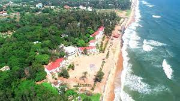

Chennai, formerly known as Madras, is the capital city of the Indian state of Tamil Nadu. Situated on the Coromandel Coast off the Bay of Bengal, Chennai is a bustling metropolis that seamlessly blends tradition and modernity.
The city has a rich cultural heritage and is known for its vibrant arts and music scene. It is a hub for classical Carnatic music and Bharatanatyam dance, with numerous cultural festivals held throughout the year. The Music Season, held in December and January, attracts renowned artists and music lovers from around the world.

Chennai is also home to several architectural gems. The Kapaleeshwarar Temple, dedicated to Lord Shiva, showcases exquisite Dravidian architecture with its towering gopuram (entrance tower) and intricately carved sculptures. Another notable landmark is the Fort St. George, built by the British East India Company in the 17th century, which now houses the Tamil Nadu Legislative Assembly and a museum.

The city's coastline is adorned with beautiful beaches, the most famous being Marina Beach. Stretching for about 13 kilometers, it is one of the longest urban beaches in the world. Elliot's Beach, also known as Besant Nagar Beach, is a popular spot for evening strolls and enjoying local street food.

Chennai is a gastronomic delight, offering a diverse range of culinary experiences. From authentic South Indian delicacies like dosas, idlis, and filter coffee to flavorful Chettinad cuisine and mouthwatering seafood, the city caters to every palate. Don't miss the opportunity to savor a traditional South Indian meal on a banana leaf.
In addition to its cultural and culinary offerings, Chennai is also a thriving hub for technology, with a growing IT and business process outsourcing (BPO) sector. The city's educational institutions and research centers contribute to its reputation as a knowledge hub.
Chennai's warm and welcoming people, known for their hospitality, make it a memorable destination for visitors. Whether you're exploring historical landmarks, enjoying a classical music concert, or indulging in delicious street food, Chennai promises a vibrant and enriching experience.
Accommodation Facilities
Hotel Tamilnadu
Hotel Tamilnadu offers luxurious accommodation with stunning views of the city. It features spacious rooms, modern amenities, and a rooftop swimming pool.
In addition to its cultural and natural attractions, Chennai offers a wide range of accommodation options to suit every traveler's needs. Whether you're looking for luxury hotels, budget-friendly guesthouses, or serviced apartments, you'll find plenty of choices to make your stay comfortable and enjoyable.